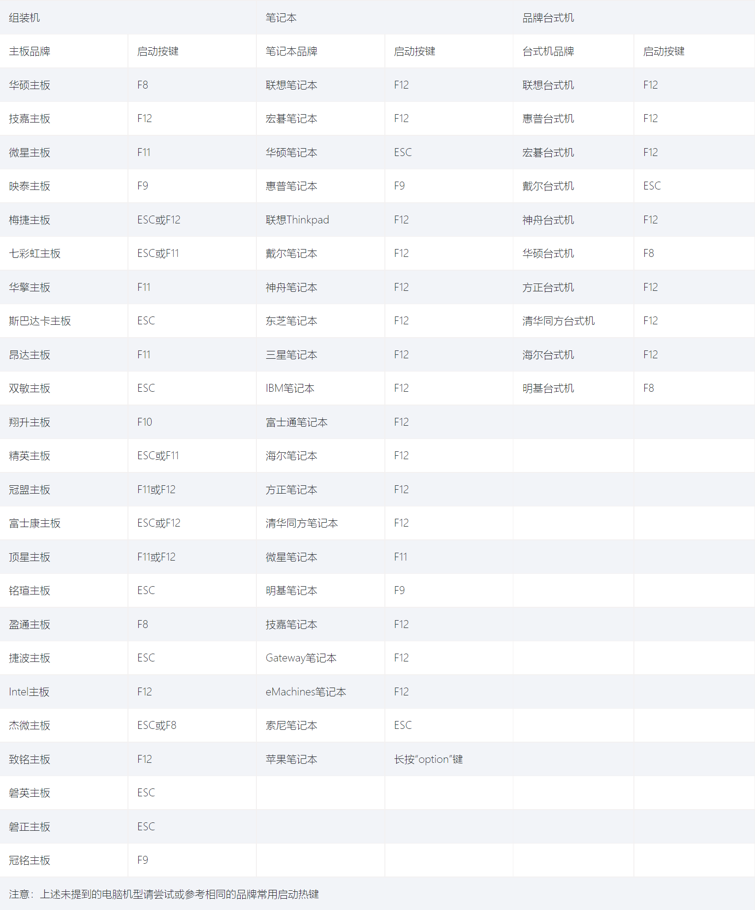

<!DOCTYPE html>


<html lang="zh-CN">
  

    <head>
      <meta charset="utf-8" />
       
      <meta name="keywords" content="赛先生 德先生" />
       
      <meta
        name="viewport"
        content="width=device-width, initial-scale=1, maximum-scale=1"
      />
      <title>(施工中)Arch Linux个人安装步骤小记 |  Sunshine_Planet&#39; s BLOG</title>
  <meta name="generator" content="hexo-theme-ayer">
      
      <link rel="shortcut icon" href="/logo.ico" />
       
<link rel="stylesheet" href="/dist/main.css">

      <link
        rel="stylesheet"
        href="https://cdn.jsdelivr.net/gh/Shen-Yu/cdn/css/remixicon.min.css"
      />
      
<link rel="stylesheet" href="/css/custom.css">
 
      <script src="https://cdn.jsdelivr.net/npm/pace-js@1.0.2/pace.min.js"></script>
       
 

      <link
        rel="stylesheet"
        href="https://cdn.jsdelivr.net/npm/@sweetalert2/theme-bulma@5.0.1/bulma.min.css"
      />
      <script src="https://cdn.jsdelivr.net/npm/sweetalert2@11.0.19/dist/sweetalert2.min.js"></script>

      <!-- mermaid -->
      
      <style>
        .swal2-styled.swal2-confirm {
          font-size: 1.6rem;
        }
      </style>
    <link rel="alternate" href="/atom.xml" title="Sunshine_Planet' s BLOG" type="application/atom+xml">
</head>
  </html>
</html>


<body>
  <div id="app">
    
      
    <main class="content on">
      <section class="outer">
  <article
  id="post-Arch-Linux个人安装步骤小记"
  class="article article-type-post"
  itemscope
  itemprop="blogPost"
  data-scroll-reveal
>
  <div class="article-inner">
    
    <header class="article-header">
       
<h1 class="article-title sea-center" style="border-left:0" itemprop="name">
  (施工中)Arch Linux个人安装步骤小记
</h1>
 

      
    </header>
     
    <div class="article-meta">
      <a href="/2021/02/24/Arch-Linux%E4%B8%AA%E4%BA%BA%E5%AE%89%E8%A3%85%E6%AD%A5%E9%AA%A4%E5%B0%8F%E8%AE%B0/" class="article-date">
  <time datetime="2021-02-24T15:04:42.000Z" itemprop="datePublished">2021-02-24</time>
</a>  
    </div>
      
    <div class="tocbot"></div>


  
    <div class="article-entry" itemprop="articleBody">
       
  <h1 id="前言"><a href="#前言" class="headerlink" title="前言"></a>前言</h1><p><strong><a target="_blank" rel="noopener" href="https://wiki.archlinux.org/index.php/Arch_Linux">Arch Linux</a>为我目前所使用的 Linux 发行版，我根据自己的实际需求，写出此安装步骤，以系统化学习和方便使用~~面向^C 和^V 的系统安装步骤 XD~~~</strong></p>
<p><strong>Arch Linux 的官方 Wiki 上推荐使用 Live 系统安装 Arch Linux，我也在使用 Arch 的过程中，虽然也了解了那些一键安装脚本，但是。。。</strong></p>
<h2 id="毕竟都用-Arch-了，就要做好折腾的觉悟好吧"><a href="#毕竟都用-Arch-了，就要做好折腾的觉悟好吧" class="headerlink" title="毕竟都用 Arch 了，就要做好折腾的觉悟好吧"></a><del>毕竟都用 Arch 了，就要做好折腾的觉悟好吧</del></h2><p><em>那么就让我们开始吧！</em></p>
<h2 id="官方-Wiki-的安装过程"><a href="#官方-Wiki-的安装过程" class="headerlink" title="官方 Wiki 的安装过程"></a><strong>官方 Wiki 的安装过程</strong></h2><ul>
<li>安装前的准备</li>
<li>安装必须的软件包</li>
<li>配置 Fstab 文件<blockquote>
<p>fstab 文件可用于定义磁盘分区，各种其他块设备或远程文件系统应如何装入文件系统。</p>
<blockquote>
<p>说人话就是开机的时候自动挂载硬盘分区</p>
</blockquote>
</blockquote>
</li>
<li>Chroot（切换 root 用户）到已经安装好的系统</li>
<li>设置时区以及本地化</li>
<li>设置 hostname 和 hosts(主机名和 hosts 文件)</li>
<li>设置 Root 用户密码</li>
<li>安装引导程序</li>
<li>安装完成，重启！</li>
</ul>
<p>本人设置模块化的引索目录，顺序进行即可正确安装<del>当然你是确定自己需要的步骤自取那就更好了，本来写这篇文章的目的就是这个 hahaha</del></p>
<p><strong>这里按照我的习惯命名，细分并改变了一下安装顺序，请注意！</strong></p>
<h1 id="开始"><a href="#开始" class="headerlink" title="开始"></a>开始</h1><h2 id="安装前的准备"><a href="#安装前的准备" class="headerlink" title="安装前的准备"></a>安装前的准备</h2><h3 id="下载-iso-格式镜像文件官方下载网站"><a href="#下载-iso-格式镜像文件官方下载网站" class="headerlink" title="下载 iso 格式镜像文件官方下载网站"></a>下载 iso 格式镜像文件<a target="_blank" rel="noopener" href="https://archlinux.org/download/">官方下载网站</a></h3><h3 id="以-U-盘为-Live-环境，使用开源软件Ventory制作U盘启动盘"><a href="#以-U-盘为-Live-环境，使用开源软件Ventory制作U盘启动盘" class="headerlink" title="以 U 盘为 Live 环境，使用开源软件Ventory制作Ｕ盘启动盘"></a>以 U 盘为 Live 环境，使用开源软件<a target="_blank" rel="noopener" href="https://www.ventoy.net/">Ventory</a>制作Ｕ盘启动盘</h3><p>这里使用 Ventory 的原因有：Ventory 支持多 iso 直接启动，也就意味着不像传统的 iso 文件刻录进 U 盘，可以充分利用 U 盘空间，制作双系统以及多系统系统启动盘，安装盘。</p>
<p>当然这里也可以使用另外一款开源 U 盘刻录软件<a target="_blank" rel="noopener" href="https://rufus.ie/">Rufus</a></p>
<h3 id="确认主板-bios-模式为传统-bios-或是-UEFI-模式"><a href="#确认主板-bios-模式为传统-bios-或是-UEFI-模式" class="headerlink" title="确认主板 bios 模式为传统 bios 或是 UEFI 模式"></a>确认主板 bios 模式为传统 bios 或是 UEFI 模式</h3><p>虽是这么说 Linux 能让老电脑焕发第二春，但是对于那种都已经腐烂的电脑，真的还是不推荐安装此系统，毕竟我们安装 Arch Linux 是用来折腾的，（至少对我来说）。对于风烛残年的老电脑来说，还是让他好好休息吧，干活是年轻人的事情。</p>
<p>现在（截止于 2021 年）市面上流通的个人电脑，我们安装系统时推荐使用主板 UEFI 模式+硬盘 GPT 模式。并且 UEFI 模式则需在主板 bios 设置中关闭安全启动这一选项。  </p>
<p></p>
<h3 id="进入-ArchLinux-Live-安装环境"><a href="#进入-ArchLinux-Live-安装环境" class="headerlink" title="进入 ArchLinux Live 安装环境"></a>进入 ArchLinux Live 安装环境</h3><p>这个就比较简单了，选择主板 bios 的启动选项的快捷键还是进如主板 bios 设置修改启动顺序，这些随你的心情，只要选择用 Ventory 制作好的Ｕ盘启动盘就行了。</p>
<p>进入 U 盘后，选择相应的 Arch Linux 镜像，等待跑码，跑码结束后就是进入命令行输入模式了。</p>
<h2 id="配置-Live-CD-环境"><a href="#配置-Live-CD-环境" class="headerlink" title="配置 Live CD 环境"></a>配置 Live CD 环境</h2><blockquote>
<p>注意，每条命令，我会做出或多或少的相关解释。<br>而且请注意，我们进入 Live 环境后，是以 root 权限进行操作。<br>所以做出以下约定：<br>以#开头的命令，需以 root 权限运行<br>以%开头的命令，需以普通用户权限运行</p>
</blockquote>
<figure class="highlight plaintext"><table><tr><td class="gutter"><pre><span class="line">1</span><br><span class="line">2</span><br><span class="line">3</span><br><span class="line">4</span><br><span class="line">5</span><br><span class="line">6</span><br></pre></td><td class="code"><pre><span class="line"># Arch Linux的安装需要网络环境，第一步就是连接互联网，这里采用有线网络连接计算机，若想使用无线网络连接计算机，等我慢慢写吧。。。网上都有</span><br><span class="line">dhcpcd</span><br><span class="line"></span><br><span class="line"># 校准本地时间</span><br><span class="line">timedatectl set-ntp true</span><br><span class="line"></span><br></pre></td></tr></table></figure>

<h2 id="对磁盘进行分区和挂载操作"><a href="#对磁盘进行分区和挂载操作" class="headerlink" title="对磁盘进行分区和挂载操作"></a>对磁盘进行分区和挂载操作</h2><figure class="highlight plaintext"><table><tr><td class="gutter"><pre><span class="line">1</span><br><span class="line">2</span><br><span class="line">3</span><br><span class="line">4</span><br><span class="line">5</span><br><span class="line">6</span><br><span class="line">7</span><br><span class="line">8</span><br><span class="line">9</span><br><span class="line">10</span><br><span class="line">11</span><br><span class="line">12</span><br><span class="line">13</span><br><span class="line">14</span><br><span class="line">15</span><br><span class="line">16</span><br><span class="line">17</span><br><span class="line">18</span><br><span class="line">19</span><br><span class="line">20</span><br><span class="line">21</span><br><span class="line">22</span><br><span class="line">23</span><br><span class="line">24</span><br><span class="line">25</span><br><span class="line">26</span><br><span class="line">27</span><br><span class="line">28</span><br><span class="line">29</span><br><span class="line">30</span><br><span class="line">31</span><br><span class="line">32</span><br><span class="line">33</span><br><span class="line">34</span><br><span class="line">35</span><br><span class="line">36</span><br><span class="line">37</span><br></pre></td><td class="code"><pre><span class="line"></span><br><span class="line"># 查看磁盘及其分区情况</span><br><span class="line">lsblk</span><br><span class="line"></span><br><span class="line"># 使用 cgdisk （GUI界面）或 gdisk （命令行界面）对相关磁盘进行分区（请自选对应磁盘）</span><br><span class="line">cgdisk /dev/nvme0n1</span><br><span class="line">gdisk /dev/sda</span><br><span class="line"></span><br><span class="line"></span><br><span class="line"># 再次查看磁盘及其分区情况</span><br><span class="line">lsblk -f</span><br><span class="line"></span><br><span class="line"># 确定好磁盘分区，开始对分区进行格式化</span><br><span class="line">我们对 /dev/nvme0n1p1 格式化为vfat文件系统(/boot 分区)</span><br><span class="line">我们对 /dev/nvme0n1p2 格式化为交换分区(交换分区)</span><br><span class="line">我们对 /dev/nvme0n1p3 格式化为xfs文件系统(根目录/)</span><br><span class="line">我们对 /dev/nvme0n1p4 格式化为xfs文件系统(/home 分区)</span><br><span class="line"></span><br><span class="line">mkfs.vfat /dev/nvme0n1p1</span><br><span class="line">mkswap /dev/nvme0n1p2</span><br><span class="line">mkfs.xfs /dev/nvme0n1p3</span><br><span class="line">mkfs.xfs /dev/nvme0n1p4</span><br><span class="line"></span><br><span class="line"># 最后检查磁盘分区，确认分区完毕</span><br><span class="line">lsblk -f</span><br><span class="line"></span><br><span class="line"># 挂载磁盘到 Live CD 内存中</span><br><span class="line">mount /dev/mvne0n1p3 /mnt</span><br><span class="line"></span><br><span class="line"># 建立boot，home挂载点</span><br><span class="line">mkdir /mnt/boot &amp; mkdir /mnt/home</span><br><span class="line"></span><br><span class="line"># 挂载磁盘相关分区到boot，home文件夹中</span><br><span class="line">mount /dev/nvme0n1p1 /mnt/boot &amp; mount /dev/nvme0n1p4 /mnt/home</span><br><span class="line"></span><br><span class="line"># 挂载交换分区</span><br><span class="line">swapon /dev/nvme0n1p2</span><br></pre></td></tr></table></figure>

<h2 id="安装-Linux-内核以及必须的软件包和元软件包"><a href="#安装-Linux-内核以及必须的软件包和元软件包" class="headerlink" title="安装 Linux 内核以及必须的软件包和元软件包"></a>安装 Linux 内核以及必须的<a target="_blank" rel="noopener" href="https://wiki.archlinux.org/title/Meta_package_and_package_group_(%E7%AE%80%E4%BD%93%E4%B8%AD%E6%96%87)">软件包和元软件包</a></h2><figure class="highlight plaintext"><table><tr><td class="gutter"><pre><span class="line">1</span><br><span class="line">2</span><br><span class="line">3</span><br><span class="line">4</span><br><span class="line">5</span><br></pre></td><td class="code"><pre><span class="line"># 安装 base 元软件包、base-devel软件包组、 Linux 内核以及常规硬件的固件</span><br><span class="line">和有线/无线网络工具，Btrfs、VFAT、exFAT、ext、NTFS、XFS文件系统管理工具</span><br><span class="line"></span><br><span class="line">pacstrap /mnt base base-devel linux linux-firmware dhcpcd iwd btrfs-progs dosfstools exfat-utils e2fsprogs ntfs-3g xfsprogs gdisk </span><br><span class="line"></span><br></pre></td></tr></table></figure>

<h2 id="初步配置已安装系统"><a href="#初步配置已安装系统" class="headerlink" title="初步配置已安装系统"></a>初步配置已安装系统</h2><figure class="highlight plaintext"><table><tr><td class="gutter"><pre><span class="line">1</span><br><span class="line">2</span><br><span class="line">3</span><br><span class="line">4</span><br><span class="line">5</span><br><span class="line">6</span><br><span class="line">7</span><br><span class="line">8</span><br><span class="line">9</span><br><span class="line">10</span><br><span class="line">11</span><br><span class="line">12</span><br><span class="line">13</span><br><span class="line">14</span><br><span class="line">15</span><br><span class="line">16</span><br><span class="line">17</span><br><span class="line">18</span><br><span class="line">19</span><br><span class="line">20</span><br><span class="line">21</span><br><span class="line">22</span><br><span class="line">23</span><br><span class="line">24</span><br><span class="line">25</span><br><span class="line">26</span><br><span class="line">27</span><br><span class="line">28</span><br><span class="line">29</span><br><span class="line">30</span><br><span class="line">31</span><br><span class="line">32</span><br><span class="line">33</span><br><span class="line">34</span><br><span class="line">35</span><br><span class="line">36</span><br><span class="line">37</span><br><span class="line">38</span><br><span class="line">39</span><br><span class="line">40</span><br><span class="line">41</span><br><span class="line">42</span><br><span class="line">43</span><br><span class="line">44</span><br><span class="line">45</span><br><span class="line">46</span><br><span class="line">47</span><br><span class="line">48</span><br><span class="line">49</span><br><span class="line">50</span><br></pre></td><td class="code"><pre><span class="line"></span><br><span class="line"># 配置fstab文件</span><br><span class="line">genfstab -U /mnt &gt;&gt; /mnt/etc/fstab</span><br><span class="line"></span><br><span class="line"># Change root</span><br><span class="line">arch-chroot /mnt</span><br><span class="line"></span><br><span class="line"># 安装文本编辑器nano、vim</span><br><span class="line">访问 man 和 info 页面的工具</span><br><span class="line">联网所需要的程序</span><br><span class="line">pacman -S nano vim man-db man-pages dialog wpa_supplicant networkmanager netctl</span><br><span class="line"></span><br><span class="line"># 设置时区为上海时区</span><br><span class="line">ln -sf /usr/share/zoneinfo/Asia/Shanghai /etc/localtime</span><br><span class="line"></span><br><span class="line"># 设置时间标准为 UTC 并调整时间偏移</span><br><span class="line">hwclock --systohc --utc</span><br><span class="line"></span><br><span class="line"># 本地化过程1</span><br><span class="line">vim /etc/locale.gen</span><br><span class="line">- - - - - - - - -  - - - - - - -</span><br><span class="line">删除对应地区和编码格式前的#号</span><br><span class="line"></span><br><span class="line"># 更新所做出的更改</span><br><span class="line">locale-gen</span><br><span class="line"></span><br><span class="line"># 本地化过程2</span><br><span class="line">vim /etc/locale.conf</span><br><span class="line">- - - - - - - - - -  - - - - - - </span><br><span class="line">在locale.conf中添加如下文本</span><br><span class="line">LANG=en_US.UTF-8</span><br><span class="line">LC_ALL=C</span><br><span class="line"></span><br><span class="line"># 设置主机名（替换myhostname）</span><br><span class="line">vim /etc/hostname</span><br><span class="line">- - - - - - - - -  - - - - - - -</span><br><span class="line">在locale.conf中添加如下文本</span><br><span class="line">myhostname</span><br><span class="line"></span><br><span class="line"># 设置hosts文件（替换myhostname）</span><br><span class="line">vim /etc/hosts</span><br><span class="line">- - - - - - - - -  - - - - - - -</span><br><span class="line">在hosts中添加如下文本</span><br><span class="line">127.0.0.1	localhost</span><br><span class="line">::1		localhost</span><br><span class="line">127.0.1.1	myhostname.localdomain	myhostname</span><br><span class="line"></span><br><span class="line"># 修改root密码</span><br><span class="line">passwd</span><br><span class="line"></span><br></pre></td></tr></table></figure>

<h2 id="安装和配置引导程序"><a href="#安装和配置引导程序" class="headerlink" title="安装和配置引导程序"></a>安装和配置引导程序</h2><p>关于 GRUB 的2.06更新的一点改变：</p>
<blockquote>
<ol>
<li>如果您正在使用 os-prober 生成其他系统的引导项，grub 2.06 不再自动启用 os-prober，您需要添加 GRUB_DISABLE_OS_PROBER=false 至 /etc/default/grub 配置文件中并且重新运行 grub-mkconfig</li>
<li>grub 2.06 现在会自动添加 固件设置菜单（ BIOS ） 引导项目，无需手动创建</li>
</ol>
</blockquote>
<figure class="highlight plaintext"><table><tr><td class="gutter"><pre><span class="line">1</span><br><span class="line">2</span><br><span class="line">3</span><br><span class="line">4</span><br><span class="line">5</span><br><span class="line">6</span><br><span class="line">7</span><br><span class="line">8</span><br><span class="line">9</span><br><span class="line">10</span><br><span class="line">11</span><br><span class="line">12</span><br><span class="line">13</span><br><span class="line">14</span><br><span class="line">15</span><br><span class="line">16</span><br><span class="line">17</span><br><span class="line">18</span><br><span class="line">19</span><br><span class="line">20</span><br><span class="line">21</span><br><span class="line">22</span><br><span class="line">23</span><br><span class="line">24</span><br><span class="line">25</span><br><span class="line">26</span><br><span class="line">27</span><br><span class="line">28</span><br><span class="line">29</span><br><span class="line">30</span><br><span class="line">31</span><br><span class="line">32</span><br></pre></td><td class="code"><pre><span class="line"># 安装CPU微码（根据具体CPU品牌进行选择）</span><br><span class="line">pacman -S amd-ucode</span><br><span class="line">pacman -S intel-ucode</span><br><span class="line"></span><br><span class="line"># 安装多系统工具 os-prober 和EFI启动管理工具</span><br><span class="line">pacman -S os-prober efibootmgr</span><br><span class="line"></span><br><span class="line"># 安装启动引导程序 gurb2</span><br><span class="line">pacman -S grub</span><br><span class="line"></span><br><span class="line"># 禁用 grub 的禁用 os-prober 功能</span><br><span class="line">vim /etc/default/grub </span><br><span class="line">- - - - - - - - -  - - - - - - -</span><br><span class="line">添加如下文本</span><br><span class="line">GRUB_DISABLE_OS_PROBER=false</span><br><span class="line"></span><br><span class="line"># 配置 grub （此为 grub 在UEFI模式下的配置）</span><br><span class="line">grub-install --target=x86_64-efi --efi-directory=/boot --bootloader-id=GRUB --recheck</span><br><span class="line">grub-install --target=x86_64-efi --efi-directory=/boot  --recheck</span><br><span class="line"></span><br><span class="line"># 更新并储存 grub 配置</span><br><span class="line">grub-mkconfig -o /boot/grub/grub.cfg</span><br><span class="line"></span><br><span class="line"># 退出磁盘系统下的 root 用户</span><br><span class="line">exit</span><br><span class="line"></span><br><span class="line"># 卸载挂载点</span><br><span class="line">umount -R /mnt</span><br><span class="line"></span><br><span class="line"># 重启</span><br><span class="line">reboot</span><br><span class="line"></span><br></pre></td></tr></table></figure>

<p>到此位置我们已经完成安装了 Arch Linux 的安装。  </p>
<p>那么，接下来，我们要开始对完善我们所安装的系统。</p>
<p><em>有时候，因为 Windows Boot Manager （Windows系统启动管理器）的强势性，即使在正确配置好了启动引导程序后，可能也不会自动引导进 GRUB 中。所以有时候我们还需在主板 BIOS 设置中，在 启动 选项中选择磁盘中已经安装并配置好的 grub 的引导程序并保存。</em>  </p>
<h2 id="完善已安装的系统"><a href="#完善已安装的系统" class="headerlink" title="完善已安装的系统"></a>完善已安装的系统</h2><figure class="highlight plaintext"><table><tr><td class="gutter"><pre><span class="line">1</span><br><span class="line">2</span><br><span class="line">3</span><br><span class="line">4</span><br><span class="line">5</span><br><span class="line">6</span><br><span class="line">7</span><br><span class="line">8</span><br><span class="line">9</span><br><span class="line">10</span><br><span class="line">11</span><br><span class="line">12</span><br><span class="line">13</span><br><span class="line">14</span><br><span class="line">15</span><br><span class="line">16</span><br><span class="line">17</span><br><span class="line">18</span><br><span class="line">19</span><br><span class="line">20</span><br><span class="line">21</span><br><span class="line">22</span><br><span class="line">23</span><br><span class="line">24</span><br><span class="line">25</span><br><span class="line">26</span><br><span class="line">27</span><br><span class="line">28</span><br><span class="line">29</span><br><span class="line">30</span><br><span class="line">31</span><br><span class="line">32</span><br><span class="line">33</span><br><span class="line">34</span><br><span class="line">35</span><br><span class="line">36</span><br><span class="line">37</span><br><span class="line">38</span><br><span class="line">39</span><br><span class="line">40</span><br><span class="line">41</span><br><span class="line">42</span><br><span class="line">43</span><br><span class="line">44</span><br><span class="line">45</span><br><span class="line">46</span><br><span class="line">47</span><br><span class="line">48</span><br><span class="line">49</span><br><span class="line">50</span><br><span class="line">51</span><br><span class="line">52</span><br><span class="line">53</span><br><span class="line">54</span><br><span class="line">55</span><br><span class="line">56</span><br><span class="line">57</span><br><span class="line">58</span><br><span class="line">59</span><br><span class="line">60</span><br><span class="line">61</span><br><span class="line">62</span><br><span class="line">63</span><br><span class="line">64</span><br><span class="line">65</span><br><span class="line">66</span><br><span class="line">67</span><br><span class="line">68</span><br><span class="line">69</span><br><span class="line">70</span><br><span class="line">71</span><br><span class="line">72</span><br><span class="line">73</span><br><span class="line">74</span><br><span class="line">75</span><br><span class="line">76</span><br><span class="line">77</span><br><span class="line">78</span><br><span class="line">79</span><br><span class="line">80</span><br><span class="line">81</span><br><span class="line">82</span><br><span class="line">83</span><br><span class="line">84</span><br><span class="line">85</span><br><span class="line">86</span><br><span class="line">87</span><br><span class="line">88</span><br><span class="line">89</span><br><span class="line">90</span><br><span class="line">91</span><br><span class="line">92</span><br><span class="line">93</span><br><span class="line">94</span><br><span class="line">95</span><br><span class="line">96</span><br><span class="line">97</span><br><span class="line">98</span><br><span class="line">99</span><br><span class="line">100</span><br><span class="line">101</span><br><span class="line">102</span><br><span class="line">103</span><br><span class="line">104</span><br><span class="line">105</span><br><span class="line">106</span><br><span class="line">107</span><br><span class="line">108</span><br><span class="line">109</span><br><span class="line">110</span><br><span class="line">111</span><br><span class="line">112</span><br><span class="line">113</span><br><span class="line">114</span><br><span class="line">115</span><br><span class="line">116</span><br><span class="line">117</span><br><span class="line">118</span><br><span class="line">119</span><br><span class="line">120</span><br><span class="line">121</span><br><span class="line">122</span><br><span class="line">123</span><br><span class="line">124</span><br><span class="line">125</span><br><span class="line">126</span><br><span class="line">127</span><br><span class="line">128</span><br><span class="line">129</span><br></pre></td><td class="code"><pre><span class="line"></span><br><span class="line">&gt; 配置桌面环境</span><br><span class="line"># 安装软件包组 xorg </span><br><span class="line">pacman -S xorg</span><br><span class="line"></span><br><span class="line"># 安装 wayland</span><br><span class="line">pacman -S wayland</span><br><span class="line"></span><br><span class="line"># 安装显示管理器 SDDM</span><br><span class="line">pacman -S sddm</span><br><span class="line"></span><br><span class="line"># 安装 Plasma 桌面、 KDE 应用和 Wayland 的KDE支持</span><br><span class="line">pacman -S plasma kde-applications plasma-wayland-session</span><br><span class="line"></span><br><span class="line"># 设置相关服务开机自启</span><br><span class="line">禁用系统自带的网络服务</span><br><span class="line">systemctl disable netctl</span><br><span class="line">启用显示管理器 SDDM</span><br><span class="line">systemctl enable sddm</span><br><span class="line">启动桌面环境用的网络管理</span><br><span class="line">systemctl enable NetworkManager</span><br><span class="line"></span><br><span class="line">&gt; 配置 Nvidia 显卡驱动(如果你有N卡的话，而且在显卡型号不会太老的情况)</span><br><span class="line"># pacman -S nvidia nvidia-utils nvidia-settings</span><br><span class="line"># nvidia-xconfig</span><br><span class="line"></span><br><span class="line"># 完成配置，重启</span><br><span class="line">reboot</span><br><span class="line"></span><br><span class="line">&gt; 设置 sudo 并添加新用户</span><br><span class="line"># 替换 vi 编辑器 为 vim </span><br><span class="line">ln -s /usr/bin/vim /usr/bin/vi</span><br><span class="line"></span><br><span class="line"># visudo</span><br><span class="line">- - - - - - - - -  - - - - - - -</span><br><span class="line">找到该行，去掉 %wheel 前的注释符号 # （百分号保留）</span><br><span class="line">  ## Uncomment to allow members of group wheel to execute any command</span><br><span class="line">  # %wheel ALL=(ALL) ALL</span><br><span class="line"></span><br><span class="line"># 添加新用户并加进wheel用户组 （替换sunshine为你喜欢的用户名）</span><br><span class="line">useradd -m -G wheel sunshine</span><br><span class="line"></span><br><span class="line"># 为 sunshine 设置密码</span><br><span class="line">passwd sunshine</span><br><span class="line"></span><br><span class="line"># 切换到个人所创建的用户,并且以后默认使用该用户进行系统操作</span><br><span class="line">su sunshine</span><br><span class="line"></span><br><span class="line">&gt; 配置蓝牙并自启动蓝牙服务</span><br><span class="line"># pacman -S bluez bluez-utils</span><br><span class="line"># systemctl enable bluetooth.service</span><br><span class="line"></span><br><span class="line"></span><br><span class="line"></span><br><span class="line"></span><br><span class="line">&gt; 本地化过程3</span><br><span class="line">$ 安装中文字体(注意这里已经使用普通用户了)</span><br><span class="line">Google Noto Fonts 系列</span><br><span class="line">sudo pacman -S noto-fonts noto-fonts-cjk noto-fonts-emoji</span><br><span class="line">思源黑体</span><br><span class="line">sudo pacman -S adobe-source-han-sans-otc-fonts</span><br><span class="line">文泉驿正黑和微米黑</span><br><span class="line">sudo pacman -S wqy-zenhei wqy-microhei</span><br><span class="line">更纱黑体</span><br><span class="line">sudo pacman -S ttf-sarasa-gothic</span><br><span class="line"></span><br><span class="line"></span><br><span class="line">&gt; 安装版本控制工具 Git 和第三方软件包管理器 yay</span><br><span class="line">$ sudo pacman -S git</span><br><span class="line">$ mkdir ~/builds &amp; cd ~/builds</span><br><span class="line">$ git clone https://aur.archlinux.org/yay.git</span><br><span class="line">$ cd yay</span><br><span class="line">$ makepkg -si</span><br><span class="line"></span><br><span class="line">&gt; 安装并使用 Z shell(zsh) 和第三方zsh框架 oh my zsh</span><br><span class="line">$ yay -S zsh</span><br><span class="line"></span><br><span class="line">$ 初始配置 zsh 获取配置文件</span><br><span class="line">zsh </span><br><span class="line"></span><br><span class="line">$ 列出已安装的 shell 路径</span><br><span class="line">chsh -l</span><br><span class="line"></span><br><span class="line">$ 若要改变默认 shell ,改变以下 shell 路径即可</span><br><span class="line">chsh -s /bin/zsh</span><br><span class="line"></span><br><span class="line">$ 执行官方安装 oh my zsh 脚本(oh my zsh 会自动更新,无需担心后续的版本更新问题)</span><br><span class="line">sh -c &quot;$(curl -fsSL https://raw.github.com/ohmyzsh/ohmyzsh/master/tools/install.sh)&quot;</span><br><span class="line"></span><br><span class="line">$ 在桌面环境下使用我个人比较喜欢的 Agnoster 主题 （终端环境我推荐使用 ys 主题）</span><br><span class="line">vim ~/.zshrc</span><br><span class="line">- - - - - - - - - - - - - - - -</span><br><span class="line">修改配置为</span><br><span class="line">ZSH_THEME=&quot;agnoster&quot;</span><br><span class="line"></span><br><span class="line">$ 立即更新配置</span><br><span class="line">source ~/.zshrc</span><br><span class="line"></span><br><span class="line">&gt; 安装和配置中文输入法 fcitx5</span><br><span class="line">$ 安装软件包 fcitx5</span><br><span class="line">yay -S fcitx5</span><br><span class="line"></span><br><span class="line">$ 安装输入法引擎 rime</span><br><span class="line">yay -S fcitx5-rime</span><br><span class="line"></span><br><span class="line">$ 安装对 Qt 和 GTK 程序的支持输入法模块</span><br><span class="line">yay -S fcitx5-qt fcitx5-gtk</span><br><span class="line"></span><br><span class="line">$ 配置环境变量</span><br><span class="line">vim ~/.pam_environment</span><br><span class="line">- - - - - - - - -  - - - - - - -</span><br><span class="line">添加如下文本后并重新登录</span><br><span class="line">GTK_IM_MODULE DEFAULT=fcitx</span><br><span class="line">QT_IM_MODULE  DEFAULT=fcitx</span><br><span class="line">XMODIFIERS    DEFAULT=@im=fcitx</span><br><span class="line">SDL_IM_MODULE DEFAULT=fcitx</span><br><span class="line"></span><br><span class="line">$ 安装适用于 Rime 的中文维基词库</span><br><span class="line">yay -S fcitx5-pinyin-zhwiki-rime</span><br><span class="line"></span><br><span class="line">$ 安装炫酷的 material 主题</span><br><span class="line">yay -S fcitx5-material-color</span><br><span class="line">- - - - - - - - -  - - - - - - -</span><br><span class="line">在桌面进入 fcitx 的配置菜单：</span><br><span class="line">主题选择</span><br><span class="line">  Fcitx5 - 附加组件 - 经典用户界面 </span><br><span class="line">另外在 Fcitx5 - 中州韻 中可以配置输入法的外观，可以根据自己选择勾选</span><br><span class="line">  []同时在程序中显示预编辑文本编辑</span><br><span class="line"></span><br></pre></td></tr></table></figure>
<p>进行到这里，系统可以说是能够正常使用的状态了。接下来是一些常用软件的安装和注意事项。  </p>
<h1 id="个人常用软件安装和注意"><a href="#个人常用软件安装和注意" class="headerlink" title="个人常用软件安装和注意"></a>个人常用软件安装和注意</h1><h2 id="Visual-Studio-Code"><a href="#Visual-Studio-Code" class="headerlink" title="Visual Studio Code"></a>Visual Studio Code</h2><figure class="highlight plaintext"><table><tr><td class="gutter"><pre><span class="line">1</span><br><span class="line">2</span><br></pre></td><td class="code"><pre><span class="line">$ yay -S visual-studio-code-bin libdbusmenu-glib gnome-keyring</span><br><span class="line">ELECTRON_TRASH=kioclient5</span><br></pre></td></tr></table></figure>


<h1 id="TO-BE-CONTINUED"><a href="#TO-BE-CONTINUED" class="headerlink" title="TO BE CONTINUED"></a>TO BE CONTINUED</h1><figure class="highlight plaintext"><table><tr><td class="gutter"><pre><span class="line">1</span><br><span class="line">2</span><br><span class="line">3</span><br><span class="line">4</span><br></pre></td><td class="code"><pre><span class="line">yay -S mlocate</span><br><span class="line">sudo updatedb</span><br><span class="line">yay -S google-chrome onedrive-abraunegg</span><br><span class="line">reboot</span><br></pre></td></tr></table></figure>

<figure class="highlight plaintext"><table><tr><td class="gutter"><pre><span class="line">1</span><br></pre></td><td class="code"><pre><span class="line"></span><br></pre></td></tr></table></figure>

<figure class="highlight plaintext"><table><tr><td class="gutter"><pre><span class="line">1</span><br><span class="line">2</span><br><span class="line">3</span><br><span class="line">4</span><br><span class="line">5</span><br><span class="line">6</span><br><span class="line">7</span><br><span class="line">8</span><br></pre></td><td class="code"><pre><span class="line">vim /etc/pacman.conf</span><br><span class="line">yay -S android-sdk android-sdk-platform-tools android-sdk-build-tools libmtp aosp-devel</span><br><span class="line">groupadd sdkusers</span><br><span class="line">gpasswd -a &lt;user&gt; sdkusers</span><br><span class="line">chown -R :sdkusers /opt/android-sdk</span><br><span class="line">chmod -R g+w /opt/android-sdk</span><br><span class="line">newgrp sdkusers</span><br><span class="line">reboot</span><br></pre></td></tr></table></figure>

<figure class="highlight plaintext"><table><tr><td class="gutter"><pre><span class="line">1</span><br></pre></td><td class="code"><pre><span class="line">yay -S nodejs</span><br></pre></td></tr></table></figure>

<figure class="highlight plaintext"><table><tr><td class="gutter"><pre><span class="line">1</span><br></pre></td><td class="code"><pre><span class="line">yay -S</span><br></pre></td></tr></table></figure>
 
      <!-- reward -->
      
    </div>
    

    <!-- copyright -->
    
    <footer class="article-footer">
       
<div class="share-btn">
      <span class="share-sns share-outer">
        <i class="ri-share-forward-line"></i>
        Share
      </span>
      <div class="share-wrap">
        <i class="arrow"></i>
        <div class="share-icons">
          
          <a class="weibo share-sns" href="javascript:;" data-type="weibo">
            <i class="ri-weibo-fill"></i>
          </a>
          <a class="weixin share-sns wxFab" href="javascript:;" data-type="weixin">
            <i class="ri-wechat-fill"></i>
          </a>
          <a class="qq share-sns" href="javascript:;" data-type="qq">
            <i class="ri-qq-fill"></i>
          </a>
          <a class="douban share-sns" href="javascript:;" data-type="douban">
            <i class="ri-douban-line"></i>
          </a>
          <!-- <a class="qzone share-sns" href="javascript:;" data-type="qzone">
            <i class="icon icon-qzone"></i>
          </a> -->
          
          <a class="facebook share-sns" href="javascript:;" data-type="facebook">
            <i class="ri-facebook-circle-fill"></i>
          </a>
          <a class="twitter share-sns" href="javascript:;" data-type="twitter">
            <i class="ri-twitter-fill"></i>
          </a>
          <a class="google share-sns" href="javascript:;" data-type="google">
            <i class="ri-google-fill"></i>
          </a>
        </div>
      </div>
</div>

<div class="wx-share-modal">
    <a class="modal-close" href="javascript:;"><i class="ri-close-circle-line"></i></a>
    <p>扫一扫，分享到微信</p>
    <div class="wx-qrcode">
      
    </div>
</div>

<div id="share-mask"></div>  
  <ul class="article-tag-list" itemprop="keywords"><li class="article-tag-list-item"><a class="article-tag-list-link" href="/tags/Linux/" rel="tag">Linux</a></li></ul>

    </footer>
  </div>

   
  <nav class="article-nav">
    
      <a href="/2021/08/20/%E6%8F%90%E7%BA%B2/" class="article-nav-link">
        <strong class="article-nav-caption">上一篇</strong>
        <div class="article-nav-title">
          
            提纲
          
        </div>
      </a>
    
    
      <a href="/2021/01/26/ML%E7%9A%84%E6%97%B6%E5%80%99-%E8%BD%AF%E4%BB%B6%E4%B8%AD%E5%BF%83%E6%8F%90%E7%A4%BA%E9%9D%9E%E6%B3%95/" class="article-nav-link">
        <strong class="article-nav-caption">下一篇</strong>
        <div class="article-nav-title">ML的时候,软件中心提示非法?</div>
      </a>
    
  </nav>

   
<!-- valine评论 -->
<div id="vcomments-box">
  <div id="vcomments"></div>
</div>
<script src="//cdn1.lncld.net/static/js/3.0.4/av-min.js"></script>
<script src="https://cdn.jsdelivr.net/npm/valine@1.4.14/dist/Valine.min.js"></script>
<script>
  new Valine({
    el: "#vcomments",
    app_id: "ymqWFL5xcP94tRpkGUKxpmiW-MdYXbMMI",
    app_key: "JHDBJ6Hd9aFRowgLMhDjCtHw",
    path: window.location.pathname,
    avatar: "retro",
    placeholder: "Don't you want to write something?",
    recordIP: true,
  });
  const infoEle = document.querySelector("#vcomments .info");
  if (infoEle && infoEle.childNodes && infoEle.childNodes.length > 0) {
    infoEle.childNodes.forEach(function (item) {
      item.parentNode.removeChild(item);
    });
  }
</script>
<style>
  #vcomments-box {
    padding: 5px 30px;
  }

  @media screen and (max-width: 800px) {
    #vcomments-box {
      padding: 5px 0px;
    }
  }

  #vcomments-box #vcomments {
    background-color: #fff;
  }

  .v .vlist .vcard .vh {
    padding-right: 20px;
  }

  .v .vlist .vcard {
    padding-left: 10px;
  }
</style>

 
   
     
</article>

</section>
      <footer class="footer">
  <div class="outer">
    <ul>
      <li>
        Copyrights &copy;
        2021
        <i class="ri-heart-fill heart_icon"></i> Sunshine_Planet
      </li>
    </ul>
    <ul>
      <li>
        
        
        
        由 <a href="https://hexo.io" target="_blank">Hexo</a> 强力驱动
        <span class="division">|</span>
        主题 - <a href="https://github.com/Shen-Yu/hexo-theme-ayer" target="_blank">Ayer</a>
        
      </li>
    </ul>
    <ul>
      <li>
        
        
        <span>
  <span><i class="ri-user-3-fill"></i>访问人数:<span id="busuanzi_value_site_uv"></span></span>
  <span class="division">|</span>
  <span><i class="ri-eye-fill"></i>浏览次数:<span id="busuanzi_value_page_pv"></span></span>
</span>
        
      </li>
    </ul>
    <ul>
      
    </ul>
    <ul>
      
    </ul>
    <ul>
      <li>
        <!-- cnzz统计 -->
        
        <script type="text/javascript" src='https://s9.cnzz.com/z_stat.php?id=1278069914&amp;web_id=1278069914'></script>
        
      </li>
    </ul>
  </div>
</footer>    
    </main>
    <div class="float_btns">
      <div class="totop" id="totop">
  <i class="ri-arrow-up-line"></i>
</div>

<div class="todark" id="todark">
  <i class="ri-moon-line"></i>
</div>

    </div>
    <aside class="sidebar on">
      <button class="navbar-toggle"></button>
<nav class="navbar">
  
  <div class="logo">
    <a href="/"></a>
  </div>
  
  <ul class="nav nav-main">
    
    <li class="nav-item">
      <a class="nav-item-link" href="/">主页</a>
    </li>
    
    <li class="nav-item">
      <a class="nav-item-link" href="/archives">归档</a>
    </li>
    
    <li class="nav-item">
      <a class="nav-item-link" href="/categories">分类</a>
    </li>
    
    <li class="nav-item">
      <a class="nav-item-link" href="/tags">标签</a>
    </li>
    
    <li class="nav-item">
      <a class="nav-item-link" href="/tags/%E6%97%85%E8%A1%8C/">旅行</a>
    </li>
    
    <li class="nav-item">
      <a class="nav-item-link" target="_blank" rel="noopener" href="http://shenyu-vip.lofter.com">摄影</a>
    </li>
    
    <li class="nav-item">
      <a class="nav-item-link" href="/friends">友链</a>
    </li>
    
    <li class="nav-item">
      <a class="nav-item-link" href="/2021/01/26/about/">关于我</a>
    </li>
    
  </ul>
</nav>
<nav class="navbar navbar-bottom">
  <ul class="nav">
    <li class="nav-item">
      
      <a class="nav-item-link nav-item-search"  title="搜索">
        <i class="ri-search-line"></i>
      </a>
      
      
      <a class="nav-item-link" target="_blank" href="/atom.xml" title="RSS Feed">
        <i class="ri-rss-line"></i>
      </a>
      
    </li>
  </ul>
</nav>
<div class="search-form-wrap">
  <div class="local-search local-search-plugin">
  <input type="search" id="local-search-input" class="local-search-input" placeholder="Search...">
  <div id="local-search-result" class="local-search-result"></div>
</div>
</div>
    </aside>
    <div id="mask"></div>

<!-- #reward -->
<div id="reward">
  <span class="close"><i class="ri-close-line"></i></span>
  <p class="reward-p"><i class="ri-cup-line"></i>请我喝杯咖啡吧~</p>
  <div class="reward-box">
    
    <div class="reward-item">
      
      <span class="reward-type">支付宝</span>
    </div>
    
    
    <div class="reward-item">
      
      <span class="reward-type">微信</span>
    </div>
    
  </div>
</div>
    
<script src="/js/jquery-3.6.0.min.js"></script>
 
<script src="/js/lazyload.min.js"></script>

<!-- Tocbot -->
 
<script src="/js/tocbot.min.js"></script>

<script>
  tocbot.init({
    tocSelector: ".tocbot",
    contentSelector: ".article-entry",
    headingSelector: "h1, h2, h3, h4, h5, h6",
    hasInnerContainers: true,
    scrollSmooth: true,
    scrollContainer: "main",
    positionFixedSelector: ".tocbot",
    positionFixedClass: "is-position-fixed",
    fixedSidebarOffset: "auto",
  });
</script>

<script src="https://cdn.jsdelivr.net/npm/jquery-modal@0.9.2/jquery.modal.min.js"></script>
<link
  rel="stylesheet"
  href="https://cdn.jsdelivr.net/npm/jquery-modal@0.9.2/jquery.modal.min.css"
/>
<script src="https://cdn.jsdelivr.net/npm/justifiedGallery@3.7.0/dist/js/jquery.justifiedGallery.min.js"></script>

<script src="/dist/main.js"></script>

<!-- ImageViewer -->
 <!-- Root element of PhotoSwipe. Must have class pswp. -->
<div class="pswp" tabindex="-1" role="dialog" aria-hidden="true">

    <!-- Background of PhotoSwipe. 
         It's a separate element as animating opacity is faster than rgba(). -->
    <div class="pswp__bg"></div>

    <!-- Slides wrapper with overflow:hidden. -->
    <div class="pswp__scroll-wrap">

        <!-- Container that holds slides. 
            PhotoSwipe keeps only 3 of them in the DOM to save memory.
            Don't modify these 3 pswp__item elements, data is added later on. -->
        <div class="pswp__container">
            <div class="pswp__item"></div>
            <div class="pswp__item"></div>
            <div class="pswp__item"></div>
        </div>

        <!-- Default (PhotoSwipeUI_Default) interface on top of sliding area. Can be changed. -->
        <div class="pswp__ui pswp__ui--hidden">

            <div class="pswp__top-bar">

                <!--  Controls are self-explanatory. Order can be changed. -->

                <div class="pswp__counter"></div>

                <button class="pswp__button pswp__button--close" title="Close (Esc)"></button>

                <button class="pswp__button pswp__button--share" style="display:none" title="Share"></button>

                <button class="pswp__button pswp__button--fs" title="Toggle fullscreen"></button>

                <button class="pswp__button pswp__button--zoom" title="Zoom in/out"></button>

                <!-- Preloader demo http://codepen.io/dimsemenov/pen/yyBWoR -->
                <!-- element will get class pswp__preloader--active when preloader is running -->
                <div class="pswp__preloader">
                    <div class="pswp__preloader__icn">
                        <div class="pswp__preloader__cut">
                            <div class="pswp__preloader__donut"></div>
                        </div>
                    </div>
                </div>
            </div>

            <div class="pswp__share-modal pswp__share-modal--hidden pswp__single-tap">
                <div class="pswp__share-tooltip"></div>
            </div>

            <button class="pswp__button pswp__button--arrow--left" title="Previous (arrow left)">
            </button>

            <button class="pswp__button pswp__button--arrow--right" title="Next (arrow right)">
            </button>

            <div class="pswp__caption">
                <div class="pswp__caption__center"></div>
            </div>

        </div>

    </div>

</div>

<link rel="stylesheet" href="https://cdn.jsdelivr.net/npm/photoswipe@4.1.3/dist/photoswipe.min.css">
<link rel="stylesheet" href="https://cdn.jsdelivr.net/npm/photoswipe@4.1.3/dist/default-skin/default-skin.min.css">
<script src="https://cdn.jsdelivr.net/npm/photoswipe@4.1.3/dist/photoswipe.min.js"></script>
<script src="https://cdn.jsdelivr.net/npm/photoswipe@4.1.3/dist/photoswipe-ui-default.min.js"></script>

<script>
    function viewer_init() {
        let pswpElement = document.querySelectorAll('.pswp')[0];
        let $imgArr = document.querySelectorAll(('.article-entry img:not(.reward-img)'))

        $imgArr.forEach(($em, i) => {
            $em.onclick = () => {
                // slider展开状态
                // todo: 这样不好，后面改成状态
                if (document.querySelector('.left-col.show')) return
                let items = []
                $imgArr.forEach(($em2, i2) => {
                    let img = $em2.getAttribute('data-idx', i2)
                    let src = $em2.getAttribute('data-target') || $em2.getAttribute('src')
                    let title = $em2.getAttribute('alt')
                    // 获得原图尺寸
                    const image = new Image()
                    image.src = src
                    items.push({
                        src: src,
                        w: image.width || $em2.width,
                        h: image.height || $em2.height,
                        title: title
                    })
                })
                var gallery = new PhotoSwipe(pswpElement, PhotoSwipeUI_Default, items, {
                    index: parseInt(i)
                });
                gallery.init()
            }
        })
    }
    viewer_init()
</script> 
<!-- MathJax -->

<!-- Katex -->
 
    
        <link rel="stylesheet" href="https://cdn.jsdelivr.net/npm/katex@0.11.1/dist/katex.min.css">
        <script src="https://cdn.jsdelivr.net/npm/katex@0.11.1/dist/katex.min.js"></script>
        <script src="https://cdn.jsdelivr.net/npm/katex@0.11.1/dist/contrib/auto-render.min.js"></script>
        
    
 
<!-- busuanzi  -->
 
<script src="/js/busuanzi-2.3.pure.min.js"></script>
 
<!-- ClickLove -->

<!-- ClickBoom1 -->

<!-- ClickBoom2 -->

<!-- CodeCopy -->
 
<link rel="stylesheet" href="/css/clipboard.css">
 <script src="https://cdn.jsdelivr.net/npm/clipboard@2/dist/clipboard.min.js"></script>
<script>
  function wait(callback, seconds) {
    var timelag = null;
    timelag = window.setTimeout(callback, seconds);
  }
  !function (e, t, a) {
    var initCopyCode = function(){
      var copyHtml = '';
      copyHtml += '<button class="btn-copy" data-clipboard-snippet="">';
      copyHtml += '<i class="ri-file-copy-2-line"></i><span>COPY</span>';
      copyHtml += '</button>';
      $(".highlight .code pre").before(copyHtml);
      $(".article pre code").before(copyHtml);
      var clipboard = new ClipboardJS('.btn-copy', {
        target: function(trigger) {
          return trigger.nextElementSibling;
        }
      });
      clipboard.on('success', function(e) {
        let $btn = $(e.trigger);
        $btn.addClass('copied');
        let $icon = $($btn.find('i'));
        $icon.removeClass('ri-file-copy-2-line');
        $icon.addClass('ri-checkbox-circle-line');
        let $span = $($btn.find('span'));
        $span[0].innerText = 'COPIED';
        
        wait(function () { // 等待两秒钟后恢复
          $icon.removeClass('ri-checkbox-circle-line');
          $icon.addClass('ri-file-copy-2-line');
          $span[0].innerText = 'COPY';
        }, 2000);
      });
      clipboard.on('error', function(e) {
        e.clearSelection();
        let $btn = $(e.trigger);
        $btn.addClass('copy-failed');
        let $icon = $($btn.find('i'));
        $icon.removeClass('ri-file-copy-2-line');
        $icon.addClass('ri-time-line');
        let $span = $($btn.find('span'));
        $span[0].innerText = 'COPY FAILED';
        
        wait(function () { // 等待两秒钟后恢复
          $icon.removeClass('ri-time-line');
          $icon.addClass('ri-file-copy-2-line');
          $span[0].innerText = 'COPY';
        }, 2000);
      });
    }
    initCopyCode();
  }(window, document);
</script>
 
<!-- CanvasBackground -->

<script>
  if (window.mermaid) {
    mermaid.initialize({ theme: "forest" });
  }
</script>


    
    

  </div>
</body>

</html>